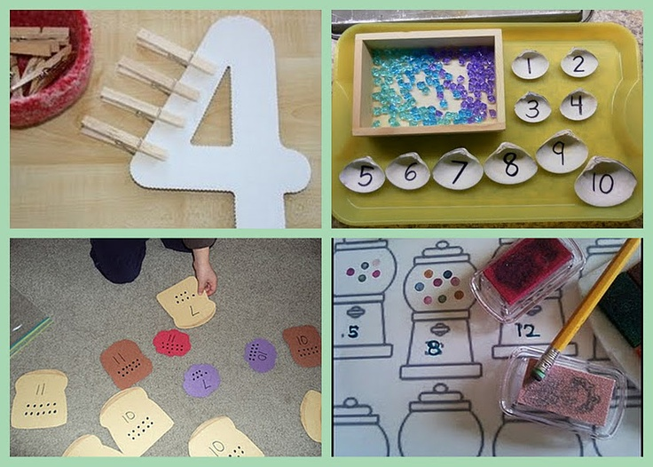

How to Teach Numbers to Your Kids
- It’s a good idea to begin introducing numbers to children as soon as their first birthday rolls around. Just the simplest of statements –“One tree, two cats” and so on, can make them realize that numbers are associated with real life object or pictures.
- Songs are also great – anything like “Ten Green Bottles” or “Three Blind Mice” – as they’re much more memorable. After 24 months, it’s possible that a child will be able to count to ten, but chances are this will be from memory rather than actually understanding what the numbers mean.
- At this stage it’s important to use every available opportunity to bring numbers into everyday life and everything you do. Two shoes, one dog, three apples and so on and so forth – it will take a whole to get the message across, but using this kind of visual reference is the key to communicating the meaning of the numbers, rather than just the sounds.
- Between the ages of three and four years, you can take things one step further to begin adding and subtracting quantities of the visual number references you’ve been using. You could for example show your child three bananas, and then take one away to become two. Or perhaps you could use building blocks to show addition and subtraction – not that they’ll understand the principles of the mathematics, but they’ll continue to associate numbers with object in everyday life.
- In terms of written numbers, it’s not uncommon for kids not to understand or be able to write any numbers until the age of 5.
Number Cards
1
One
2
Two
3
Three
4
Four
5
Five
6
Six
7
Seven
8
Eight
9
Nine
10
Ten